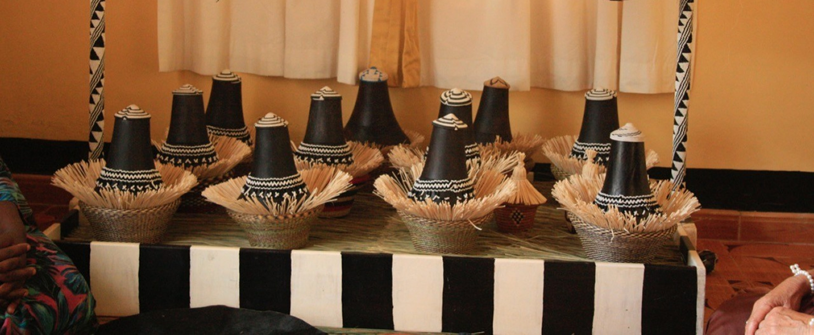

Welcome
to
UGANDA
Our Home, our passion, our love. A natural beauty wrapped in her rich scenary of diverse landscapes and the best conservation expariences.Our hospitality is second to none.Her stunning landscapes are so unmatched with a large variety of wildlife ,bird speecies and big game.She spoils her safari guests for choice with intimate and aunthentic safari camps lodges and brethe rakinf beaches "Its the pearl of Africa".

Kalo, also known as millet,
is a type of cassava flour for making a Traditionalmeal in Tooro.
It is also known as to be the stable foood for Basita clan

If you are tired and you want to refresh yur mind we have got you.
We have all types of drinks that you can take you and your family
both local and foreign
Matooke, also known as Banana, is also another type of food found in Uganda.
It is also known as Ebitoke,

We also have traditiona drinks of all types, It is in different types and for
different purposes like Tonto, Ensande etc.These drinks can be used
at differnt ceremonies like Introduction,Wedding etc
UGANDA CUISINE
HOME IS WHEREVER I'M WITH
ENJOY YOUR DAYTooro is one of the best Places in Uganda, with the most beautiful tourist site.There are different places one can explore say mountain, game parks, lakes and rivers among others.You can get different services while there say Lodges, Restaurants,Swimming, Games etc.
Tooro is one ofthe best cultures in Uganda. It is commonly know to have respectful, intelligent, and most beautiful people. It is famous for being the only tribe with petty names."Tooro burungi buliza"

When ever you are in Tooro land you must feel at home. Explore the beauty of Tooro and Uganda at large.
FORT-PORTAL CITY


TOORO ROYAL COTTAGES

OUR CULTURE

FORTPORTAL TOURISM CITY
ENJOY YOUR TOURS
TOORO
Live party! Love the party! Be the party!
Travel Uganda , Tooro Region ...
TOORO LAND
Live the party! Love the party! Be the party! On the 31st Dec join us for the biggest party in South coast at Tooro Royal Cottages..Trust me u won't believe!